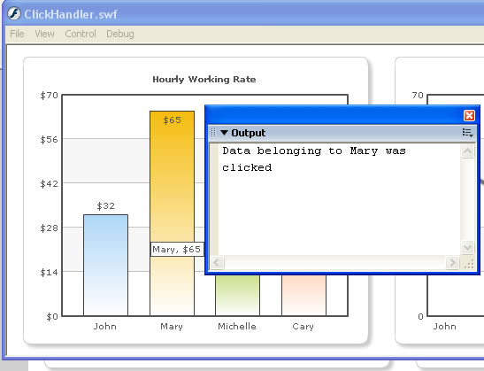

| FusionCharts and Flash > Handling Click Events |
You can easily handle the click events for data points on the chart in your Flash movies. That is, whenever a user clicks on a column or line point or pie etc., you can be notified of the same in your Flash movie. Here we'll see how to do this. |
| Adding link to XML |
To enable your parent movie to track links in FusionCharts charts, you need to add S- before every link specified in the XML data document. This instructs the chart to convey the link to its parent SWF movie. An example is given below: <set label='John' value='49' link='S-parameter'/> Here, S- is the prefix to indicate that this link should be bubbled up to parent SWF. When this link is bubbled up, parameter is passed to the event handler. We'll see this in the example below. If you need to pass multiple parameters, one way would be to use a comma to separate each new value. Then String.split the parameter into individual values in the called function. This is a simple method that would only work with string values. Let's now put all this learning into a practical example to see its usage. |
| Creating a link handler example |
In this example, we'll create a copy of MultipleCharts.fla and save it as ClickHandler.fla. We'll define the link events for both the column and line chart. Each column or line anchor, when clicked, would call a different function, which in turn would just output the name of the set. In real life scenarios, you can do better things with this data. The actions in the new movie would now contain the following: |
/**
* This keyframe contains the Actions required to load a FusionCharts
* chart in your Flash movie.
*
*/
//You first need to include the following two files in your movie.
//These two files contain pre-loading functions and application
//messages for the chart.
//Note: If you're loading multiple charts in your Flash movie, you
//do NOT need to include these files for each each. You can put these
//lines in the main timeline, so that it gets loaded only once.
#include "com/fusioncharts/includes/LoadingFunctions.as"
#include "com/fusioncharts/includes/AppMessages.as"
//To create the chart, you now need to import the Class of the
//chart which you want to create. All charts are present in the package
//com.fusioncharts.core.charts (Download Package > SourceCode folder)
//If you're using multiple charts, you can import all the requisite
//chart classes in the main timeline of your movie. That ways, you
//wouldn't have to import the chart classes everytime you wish to use.
import com.fusioncharts.core.charts.Column2DChart;
import com.fusioncharts.core.charts.Line2DChart;
// ---------------- Event handlers ---------------------//
var objL:Object = new Object();
objL.linkClicked = function(targetObj:Object){
trace("Data belonging to " + targetObj.link + " was clicked");
}
// ------------- XML Data for the chart -------------- //
//Data for chart 1
var strXML1:String = "<chart showBorder='0' bgAlpha='0,0' palette='1' caption='Hourly Working Rate' numberPrefix='$'>";
//Add simple data for demo.
strXML1 = strXML1+"<set label='John' value='32' link='S-John'/>";
strXML1 = strXML1+"<set label='Mary' value='65' link='S-Mary'/>";
strXML1 = strXML1+"<set label='Michelle' value='29' link='S-Michelle'/>";
strXML1 = strXML1+"<set label='Cary' value='43' link='S-Cary'/>";
strXML1 = strXML1+"</chart>";
var xmlData1:XML = new XML(strXML1);
// Data for Chart 2
var strXML2:String = "<chart showBorder='0' bgAlpha='0,0' palette='1' caption='Hours Worked Last week' canvasPadding='20'>";
//Add simple data for demo.
strXML2 = strXML2+"<set label='John' value='49' link='S-John'/>";
strXML2 = strXML2+"<set label='Mary' value='34' link='S-Mary'/>";
strXML2 = strXML2+"<set label='Michelle' value='61' link='S-Michelle'/>";
strXML2 = strXML2+"<set label='Cary' value='40' link='S-Cary'/>";
strXML2 = strXML2+"</chart>";
var xmlData2:XML = new XML(strXML2);
// --------------------------------------------------- //
// -------------- Actual Code to create the chart ------------//
//Create movie clips required for both the charts
var chartContainer1MC:MovieClip = this.createEmptyMovieClip("ChartHolder1", 1);
var chartContainer2MC:MovieClip = this.createEmptyMovieClip("ChartHolder2", 2);
//Now, instantiate the charts using Constructor function of the chart.
var chart1:Column2DChart = new Column2DChart(chartContainer1MC, 1, 380, 325, 20, 15, false, "EN", "noScale");
var chart2:Line2DChart = new Line2DChart(chartContainer2MC, 1, 380, 325, 440, 15, false, "EN", "noScale");
//Convey the XML data to chart.
chart1.setXMLData(xmlData1);
chart2.setXMLData(xmlData2);
//Draw the charts
chart1.render();
chart2.render();
//Register the event listeners for charts
chart1.addEventListener("linkClicked", objL);
chart2.addEventListener("linkClicked", objL);
//Stop
stop();
|
As you can see above, we've defined the link for each column and line chart anchor with prefix of S- . The columns and line anchors, when now clicked, will be handled by objL event listener. In this handler, we've just traced out the values received as parameters. In your code, you could pass indexes of data and then deal with it the way you want to. When you now run this code and click on any column or line point, you'll see the name of column/line anchor in output window as under: |
|  |